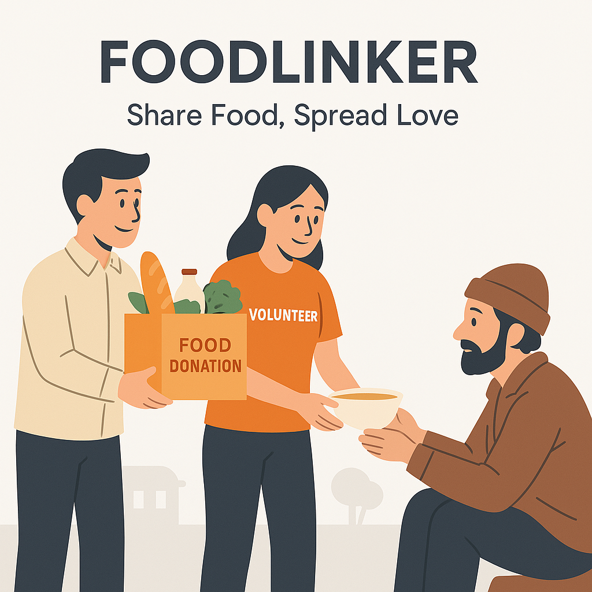

FoodLinker helps bridge the gap between surplus food and hungry people in your community.

FoodLinker is a platform dedicated to bridging the gap between excess food and hunger. Whether you're a restaurant owner, an event organizer, or someone with leftover food from a celebration, you can use our platform to donate that food to people in need.
We make the process simple and efficient—just register, fill out a quick form, and our volunteers will ensure the food reaches the right hands. Together, we can make a difference, one meal at a time.
Our vision is a world where excess food reaches empty plates, not trash bins. We aspire to build a strong network of donors and volunteers to ensure that every leftover meal becomes a source of hope for someone in need. With technology and community spirit, FoodLinker aims to create a sustainable and hunger-free future.